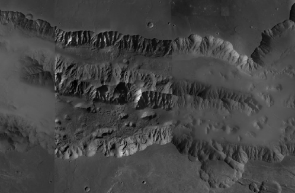
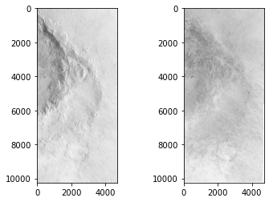
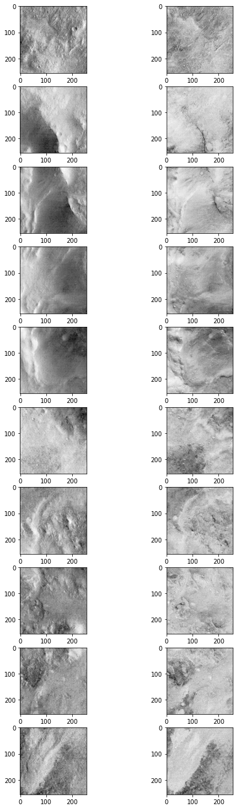
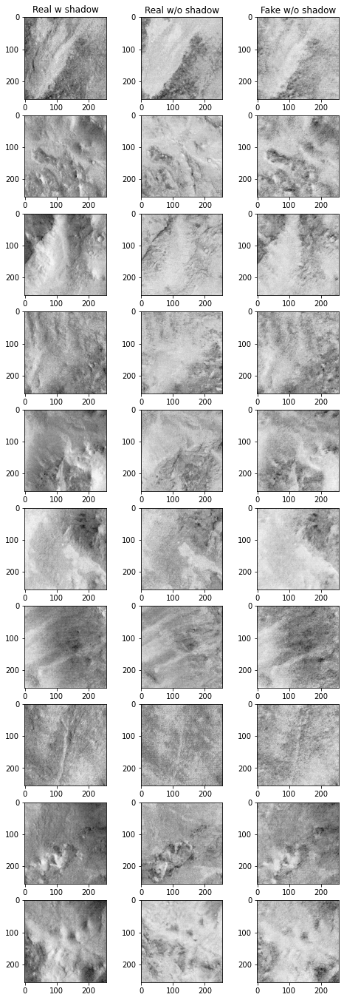

2.3. Sebastian Walter: Images shadow removal
2.3.1. IDEA
The HRSC (High-Resolution Stereo Camera) around Mars has a very elliptic orbit, therefore the images often have different illumination conditions. This makes it hard to mosaic them together. The idea here is to train a network for shadow removal.
HRSC mosaic composed from differently illuminated single images
2.3.2. DATA
We use two HRSC images for training and testing. One image has a low Sun incidence, the other image has a high Sun incidence angle. Both the images overlap, so we can create a paired dataset.
The images are “top-of-atmosphere” reflectance stored as float32.
Author: Sebastian Walter, Freie Universtaet Berlin.
[1]:
!find input
input
input/h2233_0009.nd4.14_toa
input/h4127_0000.nd4.07_toa
[2]:
#First load images, we use a class for this. The code was initially written to include additional data.
from osgeo import gdal
import numpy as np
import os
class imageStack:
def __init__(self,filename):
#self.band_type = None
#self.bands = None
#self.ct = None
self.filename = None
self.geotransform = None
self.lrx = None
self.lry = None
self.projection = None
self.ulx = None
self.uly = None
self.xsize = None
self.ysize = None
self.filename=filename
ds=gdal.Open(filename + '_' + 'toa', gdal.GA_ReadOnly)
self.xsize = ds.RasterXSize
self.ysize = ds.RasterYSize
self.projection=ds.GetProjection()
self.geotransform=ds.GetGeoTransform()
self.ulx = self.geotransform[0]
#print(self.ulx)
self.uly = self.geotransform[3]
self.lrx = self.ulx + self.geotransform[1] * self.xsize
self.lry = self.uly + self.geotransform[5] * self.ysize
ds = None
def load_data(self):
self.data = np.zeros((2, self.ysize, self.xsize), dtype=np.float32)
index = 0
for imtype in ('toa',):
#print(imtype)
#print(os.path.exists(filename+'_'+imtype))
filename = self.filename + '_' + imtype
ds = gdal.Open(filename, gdal.GA_ReadOnly)
a = ds.GetRasterBand(1).ReadAsArray()
a[a < 0.] = np.nan
#Normalize 0-1
a = (a-np.nanmin(a))/(np.nanmax(a)-np.nanmin(a))
self.data[index, :, :] = a
ds = None
index += 1
img1 = imageStack('modpreplev4/4127_0000/h4127_0000.nd4.07')
img1.load_data()
img2 = imageStack('modpreplev4/2233_0009/h2233_0009.nd4.14')
img2.load_data()
if img1.projection != img2.projection:
print('Projections do not match!')
if img1.geotransform[1] != img2.geotransform[1]:
print('Pixel sizes do not match!')
[3]:
#Now we find the overlapping area to build pairs.
# figure out intersection region
ulx = max(img1.ulx, img2.ulx)
uly = min(img1.uly, img2.uly)
lrx = min(img1.lrx, img2.lrx)
lry = max(img1.lry, img2.lry)
# Compute img1 window in pixel coordinates.
img1_xoff = int((ulx - img1.geotransform[0]) / img1.geotransform[1] + 0.1)
img1_yoff = int((uly - img1.geotransform[3]) / img1.geotransform[5] + 0.1)
img1_xsize = int((lrx - img1.geotransform[0]) / img1.geotransform[1] + 0.5) - img1_xoff
img1_ysize = int((lry - img1.geotransform[3]) / img1.geotransform[5] + 0.5) - img1_yoff
# compute img2 window in pixel coordinates.
img2_xoff = int((ulx - img2.geotransform[0]) / img2.geotransform[1] + 0.1)
img2_yoff = int((uly - img2.geotransform[3]) / img2.geotransform[5] + 0.1)
img2_xsize = int((lrx - img2.geotransform[0]) / img2.geotransform[1] + 0.5) - img2_xoff
img2_ysize = int((lry - img2.geotransform[3]) / img2.geotransform[5] + 0.5) - img2_yoff
print(img1_xoff,img1_yoff)
print(img2_xoff,img2_yoff)
print(img1_xsize,img1_ysize)
print(img2_xsize,img2_ysize)
680 45440
0 0
4716 10246
4716 10246
[4]:
#We build subsets with the dimension of the overlap
print(img1.data.shape)
img1cut=img1.data[:,img1_yoff:img1_yoff+img1_ysize,img1_xoff:img1_xoff+img1_xsize]
img2cut=img2.data[:,img2_yoff:img2_yoff+img2_ysize,img2_xoff:img2_xoff+img2_xsize]
print(img2cut.shape)
import matplotlib.pyplot as plt
f, axarr = plt.subplots(1,2)
axarr[0].imshow(img1cut[0,:,:],cmap='Greys')
axarr[1].imshow(img2cut[0,:,:],cmap='Greys')
(2, 69521, 6685)
(2, 10246, 4716)
[4]:
<matplotlib.image.AxesImage at 0x7fdad938d970>

[5]:
# Now we create pathes with a defined patch size for our tensors.
psize=256
if img1.projection != img2.projection:
print(False)
npx = int(img1cut.shape[2]/psize)
npy = int(img1cut.shape[1]/psize)
patches1=[]
patches2=[]
for x in range(0,npx):
for y in range(0,npy):
patch1 = img1cut[:,y*psize:y*psize+(psize),x*psize:x*psize+(psize)]
#patch1 = patch1/patch1.max()*255 # FALSCH
patch2 = img2cut[:,y*psize:y*psize+(psize),x*psize:x*psize+(psize)]
#patch2 = patch2/patch2.max()*255
if np.isnan(patch1).any():
continue
if np.isnan(patch2).any():
continue
patches1.append(patch1)
patches2.append(patch2)
patches1=np.asarray(patches1)
patches2=np.asarray(patches2)
[6]:
#Plot the first 10 patches
fig = plt.figure(figsize=(8, 24))
columns = 2
rows = 10
for idx, i in enumerate(range(1, columns*rows, 2)):
fig.add_subplot(rows, columns, i)
plt.imshow(patches1[idx,0,:,:],cmap='Greys')
fig.add_subplot(rows, columns, i+1)
plt.imshow(patches2[idx,0,:,:],cmap='Greys')
plt.show()

[7]:
# Cuda made trouble without this on my machine
!export PYTORCH_CUDA_ALLOC_CONF=max_split_size_mb:512
[8]:
# From http://spatial-ecology.net/docs/build/html/CASESTUDY/CNN_satelite.html
import torch
torch.cuda.empty_cache()
from torch.utils.data import Dataset, DataLoader
from torch.utils.data.sampler import SubsetRandomSampler
import torchvision.transforms as transforms
from scipy.ndimage import zoom
class MyDataset(Dataset):
def __init__(self, data1, data2):
print('data.dtype: {}'.format(data1.dtype))
print('target.dtype: {}'.format(data2.dtype))
self.data1 = torch.from_numpy(data1[:,0,:,:]).float()
self.data1 = self.data1[:,None,:,:]
self.data2 = torch.from_numpy(data2[:,0,:,:]).float()
self.data2 = self.data2[:,None,:,:]
def __getitem__(self, index):
x1 = self.data1[index]
x2 = self.data2[index]
return {'A': x1, 'B': x2}
def __len__(self):
return len(self.data1)
batch_size=2
test_split=0.2
dataset = MyDataset(patches1, patches2)
#del x_train, t_train
dataset_size = len(dataset)
print('dataset_size: {}'.format(dataset_size))
# -- split dataset
indices = list(range(dataset_size))
split = int(np.floor(test_split*dataset_size))
print('split: {}'.format(split))
train_indices, val_indices = indices[split:], indices[:split]
# -- create dataloaders
train_sampler = SubsetRandomSampler(train_indices)
valid_sampler = SubsetRandomSampler(val_indices)
dataloaders = {
'train': torch.utils.data.DataLoader(dataset, batch_size=batch_size, sampler=train_sampler),
'test': torch.utils.data.DataLoader(dataset, batch_size=batch_size, sampler=valid_sampler),
'all': torch.utils.data.DataLoader(dataset, batch_size=patches1.shape[0], shuffle=False),
}
data.dtype: float32
target.dtype: float32
dataset_size: 642
split: 128
[9]:
#Some variables for the network
cuda=True
epoch=0
n_epochs=200
lr=0.0002
decay_epoch=100
size=256
input_nc=1
output_nc=1
[10]:
# Now the definition of the network
# Code after this: https://github.com/aitorzip/PyTorch-CycleGAN
import itertools
import torchvision.transforms as transforms
from torch.utils.data import DataLoader
from torch.autograd import Variable
from PIL import Image
from models import Generator
from models import Discriminator
from utils import ReplayBuffer
from utils import LambdaLR
from utils import Logger
from utils import weights_init_normal
#from datasets import ImageDataset
###### Definition of variables ######
# Networks
netG_A2B = Generator(input_nc, output_nc)
netG_B2A = Generator(output_nc, input_nc)
netD_A = Discriminator(input_nc)
netD_B = Discriminator(output_nc)
if cuda:
netG_A2B.cuda()
netG_B2A.cuda()
netD_A.cuda()
netD_B.cuda()
netG_A2B.apply(weights_init_normal)
netG_B2A.apply(weights_init_normal)
netD_A.apply(weights_init_normal)
netD_B.apply(weights_init_normal)
# Lossess
criterion_GAN = torch.nn.MSELoss()
criterion_cycle = torch.nn.L1Loss()
criterion_identity = torch.nn.L1Loss()
# Optimizers & LR schedulers
optimizer_G = torch.optim.Adam(itertools.chain(netG_A2B.parameters(), netG_B2A.parameters()),lr=lr, betas=(0.5, 0.999))
optimizer_D_A = torch.optim.Adam(netD_A.parameters(), lr=lr, betas=(0.5, 0.999))
optimizer_D_B = torch.optim.Adam(netD_B.parameters(), lr=lr, betas=(0.5, 0.999))
lr_scheduler_G = torch.optim.lr_scheduler.LambdaLR(optimizer_G, lr_lambda=LambdaLR(n_epochs, epoch, decay_epoch).step)
lr_scheduler_D_A = torch.optim.lr_scheduler.LambdaLR(optimizer_D_A, lr_lambda=LambdaLR(n_epochs, epoch, decay_epoch).step)
lr_scheduler_D_B = torch.optim.lr_scheduler.LambdaLR(optimizer_D_B, lr_lambda=LambdaLR(n_epochs, epoch, decay_epoch).step)
# Inputs & targets memory allocation
Tensor = torch.cuda.FloatTensor if cuda else torch.Tensor
input_A = Tensor(batch_size, input_nc, size, size)
input_B = Tensor(batch_size, output_nc, size, size)
target_real = Variable(Tensor(batch_size).fill_(1.0), requires_grad=False)
target_fake = Variable(Tensor(batch_size).fill_(0.0), requires_grad=False)
fake_A_buffer = ReplayBuffer()
fake_B_buffer = ReplayBuffer()
# Loss plot using Visdom
logger = Logger(n_epochs, len(dataloaders['train']))
Setting up a new session...
[11]:
%load_ext autoreload
%autoreload 2
[12]:
###### Training ######
for epoch in range(epoch, n_epochs):
for i, batch in enumerate(dataloaders['train']):
#print(input_A.copy_(batch['A']),input_B.copy_(batch['B']))
# Set model input
real_A = Variable(input_A.copy_(batch['A']))
real_B = Variable(input_B.copy_(batch['B']))
###### Generators A2B and B2A ######
optimizer_G.zero_grad()
# Identity loss
# G_A2B(B) should equal B if real B is fed
same_B = netG_A2B(real_B)
loss_identity_B = criterion_identity(same_B, real_B)*5.0
# G_B2A(A) should equal A if real A is fed
same_A = netG_B2A(real_A)
loss_identity_A = criterion_identity(same_A, real_A)*5.0
# GAN loss
fake_B = netG_A2B(real_A)
pred_fake = netD_B(fake_B)
loss_GAN_A2B = criterion_GAN(pred_fake, target_real)
fake_A = netG_B2A(real_B)
pred_fake = netD_A(fake_A)
loss_GAN_B2A = criterion_GAN(pred_fake, target_real)
# Cycle loss
recovered_A = netG_B2A(fake_B)
loss_cycle_ABA = criterion_cycle(recovered_A, real_A)*10.0
recovered_B = netG_A2B(fake_A)
loss_cycle_BAB = criterion_cycle(recovered_B, real_B)*10.0
# Total loss
loss_G = loss_identity_A + loss_identity_B + loss_GAN_A2B + loss_GAN_B2A + loss_cycle_ABA + loss_cycle_BAB
loss_G.backward()
optimizer_G.step()
###################################
###### Discriminator A ######
optimizer_D_A.zero_grad()
# Real loss
pred_real = netD_A(real_A)
loss_D_real = criterion_GAN(pred_real, target_real)
# Fake loss
fake_A = fake_A_buffer.push_and_pop(fake_A)
pred_fake = netD_A(fake_A.detach())
loss_D_fake = criterion_GAN(pred_fake, target_fake)
# Total loss
loss_D_A = (loss_D_real + loss_D_fake)*0.5
loss_D_A.backward()
optimizer_D_A.step()
###################################
###### Discriminator B ######
optimizer_D_B.zero_grad()
# Real loss
pred_real = netD_B(real_B)
loss_D_real = criterion_GAN(pred_real, target_real)
# Fake loss
fake_B = fake_B_buffer.push_and_pop(fake_B)
pred_fake = netD_B(fake_B.detach())
loss_D_fake = criterion_GAN(pred_fake, target_fake)
# Total loss
loss_D_B = (loss_D_real + loss_D_fake)*0.5
loss_D_B.backward()
optimizer_D_B.step()
###################################
#print(epoch, loss_G.data)
#print(real_A.shape)
# Progress report (http://localhost:8097)
logger.log({'loss_G': loss_G, 'loss_G_identity': (loss_identity_A + loss_identity_B), 'loss_G_GAN': (loss_GAN_A2B + loss_GAN_B2A),
'loss_G_cycle': (loss_cycle_ABA + loss_cycle_BAB), 'loss_D': (loss_D_A + loss_D_B)},
images={'real_A': real_A[:,0,:,:], 'real_B': real_B[:,0,:,:], 'fake_A': fake_A[:,0,:,:], 'fake_B': fake_B[:,0,:,:]})
# Update learning rates
lr_scheduler_G.step()
lr_scheduler_D_A.step()
lr_scheduler_D_B.step()
# Save models checkpoints
torch.save(netG_A2B.state_dict(), 'output/netG_A2B.pth')
torch.save(netG_B2A.state_dict(), 'output/netG_B2A.pth')
torch.save(netD_A.state_dict(), 'output/netD_A.pth')
torch.save(netD_B.state_dict(), 'output/netD_B.pth')
###################################
/opt/anaconda3/envs/geocomp-ml/lib/python3.8/site-packages/torch/nn/modules/loss.py:529: UserWarning: Using a target size (torch.Size([2])) that is different to the input size (torch.Size([2, 1])). This will likely lead to incorrect results due to broadcasting. Please ensure they have the same size.
return F.mse_loss(input, target, reduction=self.reduction)
Epoch 001/200 [0257/0257] -- loss_G: 4.6604 | loss_G_identity: 0.9884 | loss_G_GAN: 1.8147 | loss_G_cycle: 1.8573 | loss_D: 0.0626 -- ETA: 14:54:47.8269198.597541
Epoch 002/200 [0257/0257] -- loss_G: 4.2055 | loss_G_identity: 0.7847 | loss_G_GAN: 1.9388 | loss_G_cycle: 1.4820 | loss_D: 0.0391 -- ETA: 14:56:28.908569
Epoch 003/200 [0257/0257] -- loss_G: 4.1517 | loss_G_identity: 0.7370 | loss_G_GAN: 1.9784 | loss_G_cycle: 1.4363 | loss_D: 0.0029 -- ETA: 14:52:56.067105
Epoch 004/200 [0257/0257] -- loss_G: 3.9929 | loss_G_identity: 0.6992 | loss_G_GAN: 1.9834 | loss_G_cycle: 1.3104 | loss_D: 0.0474 -- ETA: 14:48:46.573277
Epoch 005/200 [0257/0257] -- loss_G: 3.8834 | loss_G_identity: 0.6459 | loss_G_GAN: 1.9755 | loss_G_cycle: 1.2621 | loss_D: 0.0075 -- ETA: 14:44:29.436673
Epoch 006/200 [0257/0257] -- loss_G: 3.7566 | loss_G_identity: 0.5961 | loss_G_GAN: 1.9847 | loss_G_cycle: 1.1758 | loss_D: 0.0015 -- ETA: 14:40:08.874774
Epoch 007/200 [0257/0257] -- loss_G: 3.7276 | loss_G_identity: 0.6080 | loss_G_GAN: 1.9921 | loss_G_cycle: 1.1275 | loss_D: 0.0013 -- ETA: 14:35:40.746441
Epoch 008/200 [0257/0257] -- loss_G: 3.7243 | loss_G_identity: 0.5935 | loss_G_GAN: 1.9950 | loss_G_cycle: 1.1358 | loss_D: 0.0011 -- ETA: 14:31:13.924994
Epoch 009/200 [0257/0257] -- loss_G: 3.8616 | loss_G_identity: 0.6530 | loss_G_GAN: 1.9595 | loss_G_cycle: 1.2492 | loss_D: 0.0656 -- ETA: 14:26:35.430336
Epoch 010/200 [0257/0257] -- loss_G: 3.7906 | loss_G_identity: 0.6339 | loss_G_GAN: 1.9247 | loss_G_cycle: 1.2320 | loss_D: 0.0285 -- ETA: 14:21:47.764059
Epoch 011/200 [0257/0257] -- loss_G: 3.6130 | loss_G_identity: 0.6147 | loss_G_GAN: 1.8166 | loss_G_cycle: 1.1817 | loss_D: 0.0385 -- ETA: 14:17:18.062873
Epoch 012/200 [0257/0257] -- loss_G: 3.6523 | loss_G_identity: 0.5804 | loss_G_GAN: 1.9279 | loss_G_cycle: 1.1440 | loss_D: 0.0148 -- ETA: 14:12:52.417168
Epoch 013/200 [0257/0257] -- loss_G: 3.2617 | loss_G_identity: 0.5698 | loss_G_GAN: 1.5812 | loss_G_cycle: 1.1106 | loss_D: 0.1310 -- ETA: 14:08:25.295368
Epoch 014/200 [0257/0257] -- loss_G: 2.9444 | loss_G_identity: 0.5496 | loss_G_GAN: 1.2968 | loss_G_cycle: 1.0980 | loss_D: 0.1822 -- ETA: 14:03:59.346214
Epoch 015/200 [0257/0257] -- loss_G: 2.8999 | loss_G_identity: 0.5330 | loss_G_GAN: 1.3236 | loss_G_cycle: 1.0432 | loss_D: 0.1452 -- ETA: 13:59:33.709212
Epoch 016/200 [0257/0257] -- loss_G: 2.8257 | loss_G_identity: 0.5158 | loss_G_GAN: 1.2801 | loss_G_cycle: 1.0298 | loss_D: 0.1751 -- ETA: 13:55:07.303148
Epoch 017/200 [0257/0257] -- loss_G: 2.8345 | loss_G_identity: 0.5453 | loss_G_GAN: 1.2253 | loss_G_cycle: 1.0639 | loss_D: 0.2134 -- ETA: 13:50:42.912558
Epoch 018/200 [0257/0257] -- loss_G: 2.8850 | loss_G_identity: 0.5476 | loss_G_GAN: 1.2309 | loss_G_cycle: 1.1066 | loss_D: 0.1804 -- ETA: 13:46:19.524347
Epoch 019/200 [0257/0257] -- loss_G: 2.8826 | loss_G_identity: 0.5336 | loss_G_GAN: 1.3014 | loss_G_cycle: 1.0476 | loss_D: 0.1709 -- ETA: 13:41:52.656661
Epoch 020/200 [0257/0257] -- loss_G: 2.8002 | loss_G_identity: 0.5086 | loss_G_GAN: 1.2853 | loss_G_cycle: 1.0063 | loss_D: 0.1674 -- ETA: 13:37:24.231933
Epoch 021/200 [0257/0257] -- loss_G: 2.8498 | loss_G_identity: 0.5305 | loss_G_GAN: 1.2544 | loss_G_cycle: 1.0650 | loss_D: 0.1715 -- ETA: 13:32:56.781430
Epoch 022/200 [0257/0257] -- loss_G: 2.9861 | loss_G_identity: 0.5680 | loss_G_GAN: 1.2830 | loss_G_cycle: 1.1350 | loss_D: 0.1531 -- ETA: 13:28:28.782805
Epoch 023/200 [0257/0257] -- loss_G: 2.8635 | loss_G_identity: 0.5222 | loss_G_GAN: 1.3065 | loss_G_cycle: 1.0348 | loss_D: 0.1776 -- ETA: 13:23:59.576889
Epoch 024/200 [0257/0257] -- loss_G: 2.9217 | loss_G_identity: 0.5754 | loss_G_GAN: 1.2127 | loss_G_cycle: 1.1336 | loss_D: 0.1967 -- ETA: 13:19:31.374352
Epoch 025/200 [0257/0257] -- loss_G: 2.3584 | loss_G_identity: 0.5407 | loss_G_GAN: 0.7046 | loss_G_cycle: 1.1131 | loss_D: 0.2956 -- ETA: 13:15:04.043823
Epoch 026/200 [0257/0257] -- loss_G: 2.5320 | loss_G_identity: 0.5631 | loss_G_GAN: 0.8254 | loss_G_cycle: 1.1436 | loss_D: 0.2685 -- ETA: 13:10:35.954126
Epoch 027/200 [0257/0257] -- loss_G: 2.2572 | loss_G_identity: 0.5327 | loss_G_GAN: 0.6289 | loss_G_cycle: 1.0957 | loss_D: 0.3195 -- ETA: 13:06:07.048385
Epoch 028/200 [0257/0257] -- loss_G: 2.2473 | loss_G_identity: 0.5314 | loss_G_GAN: 0.6374 | loss_G_cycle: 1.0785 | loss_D: 0.3144 -- ETA: 13:01:39.190301
Epoch 029/200 [0257/0257] -- loss_G: 2.1509 | loss_G_identity: 0.5031 | loss_G_GAN: 0.6114 | loss_G_cycle: 1.0364 | loss_D: 0.3149 -- ETA: 12:57:11.929573
Epoch 030/200 [0257/0257] -- loss_G: 2.2338 | loss_G_identity: 0.5102 | loss_G_GAN: 0.6646 | loss_G_cycle: 1.0590 | loss_D: 0.2864 -- ETA: 12:52:44.434714
Epoch 031/200 [0257/0257] -- loss_G: 2.2897 | loss_G_identity: 0.5122 | loss_G_GAN: 0.7184 | loss_G_cycle: 1.0591 | loss_D: 0.2759 -- ETA: 12:48:16.708926
Epoch 032/200 [0257/0257] -- loss_G: 2.3301 | loss_G_identity: 0.5279 | loss_G_GAN: 0.7053 | loss_G_cycle: 1.0969 | loss_D: 0.2740 -- ETA: 12:43:49.245634
Epoch 033/200 [0257/0257] -- loss_G: 2.2829 | loss_G_identity: 0.5378 | loss_G_GAN: 0.6390 | loss_G_cycle: 1.1061 | loss_D: 0.2940 -- ETA: 12:39:21.248579
Epoch 034/200 [0257/0257] -- loss_G: 2.2596 | loss_G_identity: 0.5292 | loss_G_GAN: 0.6567 | loss_G_cycle: 1.0736 | loss_D: 0.2833 -- ETA: 12:34:52.644262
Epoch 035/200 [0257/0257] -- loss_G: 2.2436 | loss_G_identity: 0.5216 | loss_G_GAN: 0.6550 | loss_G_cycle: 1.0671 | loss_D: 0.4014 -- ETA: 12:30:23.647963
Epoch 036/200 [0257/0257] -- loss_G: 2.0988 | loss_G_identity: 0.5105 | loss_G_GAN: 0.5527 | loss_G_cycle: 1.0357 | loss_D: 0.4293 -- ETA: 12:25:53.703300
Epoch 037/200 [0257/0257] -- loss_G: 2.2110 | loss_G_identity: 0.5254 | loss_G_GAN: 0.5932 | loss_G_cycle: 1.0923 | loss_D: 0.4189 -- ETA: 12:21:24.536106
Epoch 038/200 [0257/0257] -- loss_G: 2.2562 | loss_G_identity: 0.5239 | loss_G_GAN: 0.6443 | loss_G_cycle: 1.0881 | loss_D: 0.4028 -- ETA: 12:16:55.025994
Epoch 039/200 [0257/0257] -- loss_G: 2.3027 | loss_G_identity: 0.5458 | loss_G_GAN: 0.6354 | loss_G_cycle: 1.1215 | loss_D: 0.3742 -- ETA: 12:12:25.121717
Epoch 040/200 [0257/0257] -- loss_G: 2.2881 | loss_G_identity: 0.5732 | loss_G_GAN: 0.6520 | loss_G_cycle: 1.0628 | loss_D: 0.3739 -- ETA: 12:07:55.175019
Epoch 041/200 [0257/0257] -- loss_G: 2.2673 | loss_G_identity: 0.5484 | loss_G_GAN: 0.6258 | loss_G_cycle: 1.0932 | loss_D: 0.3588 -- ETA: 12:03:25.837147
Epoch 042/200 [0257/0257] -- loss_G: 2.1515 | loss_G_identity: 0.5054 | loss_G_GAN: 0.6069 | loss_G_cycle: 1.0392 | loss_D: 0.3659 -- ETA: 11:58:56.883207
Epoch 043/200 [0257/0257] -- loss_G: 2.1567 | loss_G_identity: 0.5023 | loss_G_GAN: 0.6205 | loss_G_cycle: 1.0338 | loss_D: 0.3613 -- ETA: 11:54:27.036576
Epoch 044/200 [0257/0257] -- loss_G: 2.1793 | loss_G_identity: 0.5117 | loss_G_GAN: 0.6186 | loss_G_cycle: 1.0490 | loss_D: 0.3512 -- ETA: 11:49:57.923716
Epoch 045/200 [0257/0257] -- loss_G: 2.1190 | loss_G_identity: 0.5006 | loss_G_GAN: 0.5958 | loss_G_cycle: 1.0225 | loss_D: 0.3304 -- ETA: 11:45:28.471704
Epoch 046/200 [0257/0257] -- loss_G: 2.1380 | loss_G_identity: 0.4987 | loss_G_GAN: 0.6293 | loss_G_cycle: 1.0100 | loss_D: 0.3223 -- ETA: 11:40:57.936534
Epoch 047/200 [0257/0257] -- loss_G: 2.1042 | loss_G_identity: 0.4952 | loss_G_GAN: 0.6053 | loss_G_cycle: 1.0037 | loss_D: 0.3025 -- ETA: 11:36:27.424118
Epoch 048/200 [0257/0257] -- loss_G: 2.0810 | loss_G_identity: 0.4882 | loss_G_GAN: 0.5969 | loss_G_cycle: 0.9959 | loss_D: 0.2939 -- ETA: 11:31:56.918086
Epoch 049/200 [0257/0257] -- loss_G: 2.1306 | loss_G_identity: 0.4944 | loss_G_GAN: 0.6324 | loss_G_cycle: 1.0038 | loss_D: 0.2841 -- ETA: 11:27:26.181521
Epoch 050/200 [0257/0257] -- loss_G: 2.1390 | loss_G_identity: 0.4959 | loss_G_GAN: 0.6397 | loss_G_cycle: 1.0034 | loss_D: 0.2706 -- ETA: 11:22:55.958192
Epoch 051/200 [0257/0257] -- loss_G: 2.1734 | loss_G_identity: 0.4959 | loss_G_GAN: 0.6761 | loss_G_cycle: 1.0015 | loss_D: 0.2652 -- ETA: 11:18:25.168703
Epoch 052/200 [0257/0257] -- loss_G: 2.1827 | loss_G_identity: 0.4965 | loss_G_GAN: 0.6829 | loss_G_cycle: 1.0033 | loss_D: 0.2600 -- ETA: 11:13:54.134648
Epoch 053/200 [0257/0257] -- loss_G: 2.1241 | loss_G_identity: 0.4859 | loss_G_GAN: 0.6618 | loss_G_cycle: 0.9763 | loss_D: 0.2519 -- ETA: 11:09:22.936904
Epoch 054/200 [0257/0257] -- loss_G: 2.1365 | loss_G_identity: 0.4743 | loss_G_GAN: 0.6959 | loss_G_cycle: 0.9663 | loss_D: 0.2518 -- ETA: 11:04:51.897668
Epoch 055/200 [0257/0257] -- loss_G: 2.1918 | loss_G_identity: 0.4851 | loss_G_GAN: 0.7277 | loss_G_cycle: 0.9790 | loss_D: 0.2395 -- ETA: 11:00:20.456523
Epoch 056/200 [0257/0257] -- loss_G: 2.1678 | loss_G_identity: 0.4816 | loss_G_GAN: 0.7240 | loss_G_cycle: 0.9621 | loss_D: 0.2291 -- ETA: 10:55:49.241855
Epoch 057/200 [0257/0257] -- loss_G: 2.2254 | loss_G_identity: 0.4795 | loss_G_GAN: 0.7591 | loss_G_cycle: 0.9869 | loss_D: 0.2240 -- ETA: 10:51:17.811147
Epoch 058/200 [0257/0257] -- loss_G: 2.2188 | loss_G_identity: 0.4682 | loss_G_GAN: 0.7746 | loss_G_cycle: 0.9759 | loss_D: 0.2187 -- ETA: 10:46:46.221755
Epoch 059/200 [0257/0257] -- loss_G: 2.2228 | loss_G_identity: 0.4703 | loss_G_GAN: 0.7801 | loss_G_cycle: 0.9724 | loss_D: 0.2059 -- ETA: 10:42:15.725752
Epoch 060/200 [0257/0257] -- loss_G: 2.1975 | loss_G_identity: 0.4608 | loss_G_GAN: 0.7837 | loss_G_cycle: 0.9531 | loss_D: 0.2042 -- ETA: 10:37:44.701735
Epoch 061/200 [0257/0257] -- loss_G: 2.2060 | loss_G_identity: 0.4607 | loss_G_GAN: 0.7822 | loss_G_cycle: 0.9630 | loss_D: 0.1983 -- ETA: 10:33:13.234604
Epoch 062/200 [0257/0257] -- loss_G: 2.2520 | loss_G_identity: 0.4628 | loss_G_GAN: 0.8267 | loss_G_cycle: 0.9625 | loss_D: 0.2032 -- ETA: 10:28:41.643519
Epoch 063/200 [0257/0257] -- loss_G: 2.1852 | loss_G_identity: 0.4501 | loss_G_GAN: 0.8046 | loss_G_cycle: 0.9305 | loss_D: 0.1968 -- ETA: 10:24:09.796464
Epoch 064/200 [0257/0257] -- loss_G: 2.2021 | loss_G_identity: 0.4600 | loss_G_GAN: 0.8010 | loss_G_cycle: 0.9410 | loss_D: 0.1898 -- ETA: 10:19:38.671352
Epoch 065/200 [0257/0257] -- loss_G: 2.2078 | loss_G_identity: 0.4535 | loss_G_GAN: 0.8188 | loss_G_cycle: 0.9355 | loss_D: 0.1874 -- ETA: 10:15:07.008931
Epoch 066/200 [0257/0257] -- loss_G: 2.2046 | loss_G_identity: 0.4503 | loss_G_GAN: 0.8277 | loss_G_cycle: 0.9266 | loss_D: 0.1931 -- ETA: 10:10:35.082065
Epoch 067/200 [0257/0257] -- loss_G: 2.2189 | loss_G_identity: 0.4490 | loss_G_GAN: 0.8355 | loss_G_cycle: 0.9344 | loss_D: 0.1862 -- ETA: 10:06:03.143782
Epoch 068/200 [0257/0257] -- loss_G: 2.2324 | loss_G_identity: 0.4445 | loss_G_GAN: 0.8586 | loss_G_cycle: 0.9293 | loss_D: 0.1779 -- ETA: 10:01:31.747005
Epoch 069/200 [0257/0257] -- loss_G: 2.2615 | loss_G_identity: 0.4499 | loss_G_GAN: 0.8763 | loss_G_cycle: 0.9353 | loss_D: 0.1753 -- ETA: 9:56:59.7883744
Epoch 070/200 [0257/0257] -- loss_G: 2.2013 | loss_G_identity: 0.4360 | loss_G_GAN: 0.8546 | loss_G_cycle: 0.9107 | loss_D: 0.1721 -- ETA: 9:52:27.673122
Epoch 071/200 [0257/0257] -- loss_G: 2.2564 | loss_G_identity: 0.4485 | loss_G_GAN: 0.8834 | loss_G_cycle: 0.9245 | loss_D: 0.1715 -- ETA: 9:47:55.500131
Epoch 072/200 [0257/0257] -- loss_G: 2.2388 | loss_G_identity: 0.4353 | loss_G_GAN: 0.9021 | loss_G_cycle: 0.9014 | loss_D: 0.1601 -- ETA: 9:43:23.278123
Epoch 073/200 [0257/0257] -- loss_G: 2.2142 | loss_G_identity: 0.4280 | loss_G_GAN: 0.8946 | loss_G_cycle: 0.8916 | loss_D: 0.1604 -- ETA: 9:38:51.631999
Epoch 074/200 [0257/0257] -- loss_G: 2.2122 | loss_G_identity: 0.4282 | loss_G_GAN: 0.9129 | loss_G_cycle: 0.8711 | loss_D: 0.1509 -- ETA: 9:34:19.334916
Epoch 075/200 [0257/0257] -- loss_G: 2.2637 | loss_G_identity: 0.4288 | loss_G_GAN: 0.9510 | loss_G_cycle: 0.8839 | loss_D: 0.1936 -- ETA: 9:29:47.086132
Epoch 076/200 [0257/0257] -- loss_G: 2.2247 | loss_G_identity: 0.4152 | loss_G_GAN: 0.9537 | loss_G_cycle: 0.8558 | loss_D: 0.1575 -- ETA: 9:25:14.729254
Epoch 077/200 [0257/0257] -- loss_G: 2.2371 | loss_G_identity: 0.4187 | loss_G_GAN: 0.9796 | loss_G_cycle: 0.8388 | loss_D: 0.1491 -- ETA: 9:20:43.005840
Epoch 078/200 [0257/0257] -- loss_G: 2.1938 | loss_G_identity: 0.3997 | loss_G_GAN: 0.9670 | loss_G_cycle: 0.8272 | loss_D: 0.1508 -- ETA: 9:16:10.709667
Epoch 079/200 [0257/0257] -- loss_G: 2.1776 | loss_G_identity: 0.3972 | loss_G_GAN: 0.9798 | loss_G_cycle: 0.8006 | loss_D: 0.1420 -- ETA: 9:11:38.357124
Epoch 080/200 [0257/0257] -- loss_G: 2.1912 | loss_G_identity: 0.3926 | loss_G_GAN: 1.0098 | loss_G_cycle: 0.7887 | loss_D: 0.1484 -- ETA: 9:07:05.926115
Epoch 081/200 [0257/0257] -- loss_G: 2.1811 | loss_G_identity: 0.3902 | loss_G_GAN: 1.0105 | loss_G_cycle: 0.7804 | loss_D: 0.1320 -- ETA: 9:02:33.200119
Epoch 082/200 [0257/0257] -- loss_G: 2.1876 | loss_G_identity: 0.3748 | loss_G_GAN: 1.0396 | loss_G_cycle: 0.7732 | loss_D: 0.1354 -- ETA: 8:58:01.055040
Epoch 083/200 [0257/0257] -- loss_G: 2.2019 | loss_G_identity: 0.3783 | loss_G_GAN: 1.0666 | loss_G_cycle: 0.7570 | loss_D: 0.1284 -- ETA: 8:53:28.501031
Epoch 084/200 [0257/0257] -- loss_G: 2.1031 | loss_G_identity: 0.3773 | loss_G_GAN: 1.0199 | loss_G_cycle: 0.7058 | loss_D: 0.1363 -- ETA: 8:48:55.817809
Epoch 085/200 [0257/0257] -- loss_G: 2.1104 | loss_G_identity: 0.3730 | loss_G_GAN: 1.0347 | loss_G_cycle: 0.7028 | loss_D: 0.1392 -- ETA: 8:44:23.055600
Epoch 086/200 [0257/0257] -- loss_G: 2.1276 | loss_G_identity: 0.3640 | loss_G_GAN: 1.0609 | loss_G_cycle: 0.7027 | loss_D: 0.1230 -- ETA: 8:39:50.327474
Epoch 087/200 [0257/0257] -- loss_G: 2.1760 | loss_G_identity: 0.3624 | loss_G_GAN: 1.0799 | loss_G_cycle: 0.7337 | loss_D: 0.1288 -- ETA: 8:35:17.413702
Epoch 088/200 [0257/0257] -- loss_G: 2.0760 | loss_G_identity: 0.3542 | loss_G_GAN: 1.0501 | loss_G_cycle: 0.6716 | loss_D: 0.1291 -- ETA: 8:30:44.843595
Epoch 089/200 [0257/0257] -- loss_G: 2.1029 | loss_G_identity: 0.3558 | loss_G_GAN: 1.0663 | loss_G_cycle: 0.6809 | loss_D: 0.1299 -- ETA: 8:26:11.864045
Epoch 090/200 [0257/0257] -- loss_G: 2.0562 | loss_G_identity: 0.3433 | loss_G_GAN: 1.0597 | loss_G_cycle: 0.6533 | loss_D: 0.1295 -- ETA: 8:21:38.868206
Epoch 091/200 [0257/0257] -- loss_G: 2.0796 | loss_G_identity: 0.3584 | loss_G_GAN: 1.0701 | loss_G_cycle: 0.6511 | loss_D: 0.1246 -- ETA: 8:17:05.815358
Epoch 092/200 [0257/0257] -- loss_G: 2.0209 | loss_G_identity: 0.3357 | loss_G_GAN: 1.0594 | loss_G_cycle: 0.6258 | loss_D: 0.1148 -- ETA: 8:12:32.796663
Epoch 093/200 [0257/0257] -- loss_G: 2.0606 | loss_G_identity: 0.3419 | loss_G_GAN: 1.0830 | loss_G_cycle: 0.6357 | loss_D: 0.1387 -- ETA: 8:07:59.701934
Epoch 094/200 [0257/0257] -- loss_G: 1.9620 | loss_G_identity: 0.3285 | loss_G_GAN: 1.0369 | loss_G_cycle: 0.5966 | loss_D: 0.1290 -- ETA: 8:03:26.604196
Epoch 095/200 [0257/0257] -- loss_G: 2.0404 | loss_G_identity: 0.3209 | loss_G_GAN: 1.1107 | loss_G_cycle: 0.6087 | loss_D: 0.1239 -- ETA: 7:58:53.476718
Epoch 096/200 [0257/0257] -- loss_G: 2.0120 | loss_G_identity: 0.3207 | loss_G_GAN: 1.1025 | loss_G_cycle: 0.5887 | loss_D: 0.1125 -- ETA: 7:54:20.360523
Epoch 097/200 [0257/0257] -- loss_G: 2.0335 | loss_G_identity: 0.3260 | loss_G_GAN: 1.0972 | loss_G_cycle: 0.6103 | loss_D: 0.1258 -- ETA: 7:49:47.207693
Epoch 098/200 [0257/0257] -- loss_G: 2.0766 | loss_G_identity: 0.3265 | loss_G_GAN: 1.1429 | loss_G_cycle: 0.6072 | loss_D: 0.1300 -- ETA: 7:45:14.449766
Epoch 099/200 [0257/0257] -- loss_G: 2.0200 | loss_G_identity: 0.3165 | loss_G_GAN: 1.1272 | loss_G_cycle: 0.5763 | loss_D: 0.1226 -- ETA: 7:40:41.308497
Epoch 100/200 [0257/0257] -- loss_G: 1.9681 | loss_G_identity: 0.3087 | loss_G_GAN: 1.0895 | loss_G_cycle: 0.5699 | loss_D: 0.1245 -- ETA: 7:36:08.052463
Epoch 101/200 [0257/0257] -- loss_G: 2.0054 | loss_G_identity: 0.3187 | loss_G_GAN: 1.0921 | loss_G_cycle: 0.5947 | loss_D: 0.1196 -- ETA: 7:31:34.877067
Epoch 102/200 [0257/0257] -- loss_G: 1.9830 | loss_G_identity: 0.3072 | loss_G_GAN: 1.0903 | loss_G_cycle: 0.5854 | loss_D: 0.1217 -- ETA: 7:27:01.665675
Epoch 103/200 [0257/0257] -- loss_G: 1.9719 | loss_G_identity: 0.3020 | loss_G_GAN: 1.1108 | loss_G_cycle: 0.5591 | loss_D: 0.1230 -- ETA: 7:22:28.481867
Epoch 104/200 [0257/0257] -- loss_G: 1.9749 | loss_G_identity: 0.3023 | loss_G_GAN: 1.1065 | loss_G_cycle: 0.5661 | loss_D: 0.1129 -- ETA: 7:17:55.284815
Epoch 105/200 [0257/0257] -- loss_G: 1.9611 | loss_G_identity: 0.2948 | loss_G_GAN: 1.1212 | loss_G_cycle: 0.5451 | loss_D: 0.1237 -- ETA: 7:13:22.164065
Epoch 106/200 [0257/0257] -- loss_G: 1.9131 | loss_G_identity: 0.2884 | loss_G_GAN: 1.1071 | loss_G_cycle: 0.5177 | loss_D: 0.1158 -- ETA: 7:08:49.000410
Epoch 107/200 [0257/0257] -- loss_G: 1.8858 | loss_G_identity: 0.2799 | loss_G_GAN: 1.0965 | loss_G_cycle: 0.5093 | loss_D: 0.1169 -- ETA: 7:04:15.806926
Epoch 108/200 [0257/0257] -- loss_G: 1.9086 | loss_G_identity: 0.2828 | loss_G_GAN: 1.1134 | loss_G_cycle: 0.5123 | loss_D: 0.1118 -- ETA: 6:59:42.477474
Epoch 109/200 [0257/0257] -- loss_G: 1.9126 | loss_G_identity: 0.2756 | loss_G_GAN: 1.1319 | loss_G_cycle: 0.5051 | loss_D: 0.1053 -- ETA: 6:55:09.177413
Epoch 110/200 [0257/0257] -- loss_G: 1.9343 | loss_G_identity: 0.2738 | loss_G_GAN: 1.1619 | loss_G_cycle: 0.4986 | loss_D: 0.0957 -- ETA: 6:50:35.971447
Epoch 111/200 [0257/0257] -- loss_G: 1.9465 | loss_G_identity: 0.2746 | loss_G_GAN: 1.1715 | loss_G_cycle: 0.5004 | loss_D: 0.0899 -- ETA: 6:46:02.624985
Epoch 112/200 [0257/0257] -- loss_G: 1.9934 | loss_G_identity: 0.2739 | loss_G_GAN: 1.2093 | loss_G_cycle: 0.5103 | loss_D: 0.1064 -- ETA: 6:41:29.272276
Epoch 113/200 [0257/0257] -- loss_G: 1.9275 | loss_G_identity: 0.2648 | loss_G_GAN: 1.1692 | loss_G_cycle: 0.4935 | loss_D: 0.0971 -- ETA: 6:36:55.913914
Epoch 114/200 [0257/0257] -- loss_G: 1.9244 | loss_G_identity: 0.2598 | loss_G_GAN: 1.1760 | loss_G_cycle: 0.4886 | loss_D: 0.0905 -- ETA: 6:32:22.616908
Epoch 115/200 [0257/0257] -- loss_G: 1.8946 | loss_G_identity: 0.2578 | loss_G_GAN: 1.1638 | loss_G_cycle: 0.4730 | loss_D: 0.1040 -- ETA: 6:27:49.373334
Epoch 116/200 [0257/0257] -- loss_G: 1.9048 | loss_G_identity: 0.2518 | loss_G_GAN: 1.1845 | loss_G_cycle: 0.4684 | loss_D: 0.0951 -- ETA: 6:23:16.251287
Epoch 117/200 [0257/0257] -- loss_G: 1.9120 | loss_G_identity: 0.2550 | loss_G_GAN: 1.1850 | loss_G_cycle: 0.4720 | loss_D: 0.1017 -- ETA: 6:18:42.685790
Epoch 118/200 [0257/0257] -- loss_G: 1.9221 | loss_G_identity: 0.2629 | loss_G_GAN: 1.1789 | loss_G_cycle: 0.4803 | loss_D: 0.1694 -- ETA: 6:14:09.189389
Epoch 119/200 [0257/0257] -- loss_G: 1.8096 | loss_G_identity: 0.2479 | loss_G_GAN: 1.0966 | loss_G_cycle: 0.4651 | loss_D: 0.1063 -- ETA: 6:09:35.696082
Epoch 120/200 [0257/0257] -- loss_G: 1.8762 | loss_G_identity: 0.2443 | loss_G_GAN: 1.1781 | loss_G_cycle: 0.4538 | loss_D: 0.0935 -- ETA: 6:05:02.265919
Epoch 121/200 [0257/0257] -- loss_G: 1.8637 | loss_G_identity: 0.2443 | loss_G_GAN: 1.1662 | loss_G_cycle: 0.4532 | loss_D: 0.0874 -- ETA: 6:00:28.924962
Epoch 122/200 [0257/0257] -- loss_G: 1.8727 | loss_G_identity: 0.2431 | loss_G_GAN: 1.1747 | loss_G_cycle: 0.4549 | loss_D: 0.0920 -- ETA: 5:55:55.548595
Epoch 123/200 [0257/0257] -- loss_G: 1.8908 | loss_G_identity: 0.2431 | loss_G_GAN: 1.1994 | loss_G_cycle: 0.4484 | loss_D: 0.0987 -- ETA: 5:51:22.223631
Epoch 124/200 [0257/0257] -- loss_G: 1.8528 | loss_G_identity: 0.2376 | loss_G_GAN: 1.1789 | loss_G_cycle: 0.4363 | loss_D: 0.0938 -- ETA: 5:46:48.911163
Epoch 125/200 [0257/0257] -- loss_G: 1.8406 | loss_G_identity: 0.2384 | loss_G_GAN: 1.1596 | loss_G_cycle: 0.4426 | loss_D: 0.0923 -- ETA: 5:42:15.567900
Epoch 126/200 [0257/0257] -- loss_G: 1.8438 | loss_G_identity: 0.2359 | loss_G_GAN: 1.1733 | loss_G_cycle: 0.4346 | loss_D: 0.0961 -- ETA: 5:37:42.254412
Epoch 127/200 [0257/0257] -- loss_G: 1.8528 | loss_G_identity: 0.2322 | loss_G_GAN: 1.1863 | loss_G_cycle: 0.4343 | loss_D: 0.0920 -- ETA: 5:33:09.090676
Epoch 128/200 [0257/0257] -- loss_G: 1.8209 | loss_G_identity: 0.2327 | loss_G_GAN: 1.1679 | loss_G_cycle: 0.4202 | loss_D: 0.0985 -- ETA: 5:28:35.747767
Epoch 129/200 [0257/0257] -- loss_G: 1.7960 | loss_G_identity: 0.2255 | loss_G_GAN: 1.1541 | loss_G_cycle: 0.4164 | loss_D: 0.0990 -- ETA: 5:24:02.397976
Epoch 130/200 [0257/0257] -- loss_G: 1.8018 | loss_G_identity: 0.2238 | loss_G_GAN: 1.1642 | loss_G_cycle: 0.4138 | loss_D: 0.0937 -- ETA: 5:19:29.070979
Epoch 131/200 [0257/0257] -- loss_G: 1.7727 | loss_G_identity: 0.2248 | loss_G_GAN: 1.1369 | loss_G_cycle: 0.4109 | loss_D: 0.0980 -- ETA: 5:14:55.754414
Epoch 132/200 [0257/0257] -- loss_G: 1.7786 | loss_G_identity: 0.2230 | loss_G_GAN: 1.1428 | loss_G_cycle: 0.4127 | loss_D: 0.0988 -- ETA: 5:10:22.461968
Epoch 133/200 [0257/0257] -- loss_G: 1.7762 | loss_G_identity: 0.2222 | loss_G_GAN: 1.1458 | loss_G_cycle: 0.4082 | loss_D: 0.0964 -- ETA: 5:05:49.190572
Epoch 134/200 [0257/0257] -- loss_G: 1.7474 | loss_G_identity: 0.2169 | loss_G_GAN: 1.1263 | loss_G_cycle: 0.4042 | loss_D: 0.1008 -- ETA: 5:01:15.837558
Epoch 135/200 [0257/0257] -- loss_G: 1.7543 | loss_G_identity: 0.2144 | loss_G_GAN: 1.1398 | loss_G_cycle: 0.4001 | loss_D: 0.1070 -- ETA: 4:56:42.463761
Epoch 136/200 [0257/0257] -- loss_G: 1.7305 | loss_G_identity: 0.2131 | loss_G_GAN: 1.1180 | loss_G_cycle: 0.3994 | loss_D: 0.0986 -- ETA: 4:52:09.094074
Epoch 137/200 [0257/0257] -- loss_G: 1.7333 | loss_G_identity: 0.2086 | loss_G_GAN: 1.1340 | loss_G_cycle: 0.3908 | loss_D: 0.1063 -- ETA: 4:47:35.694247
Epoch 138/200 [0257/0257] -- loss_G: 1.7361 | loss_G_identity: 0.2106 | loss_G_GAN: 1.1298 | loss_G_cycle: 0.3956 | loss_D: 0.1009 -- ETA: 4:43:02.336745
Epoch 139/200 [0257/0257] -- loss_G: 1.7417 | loss_G_identity: 0.2106 | loss_G_GAN: 1.1409 | loss_G_cycle: 0.3902 | loss_D: 0.1015 -- ETA: 4:38:28.935789
Epoch 140/200 [0257/0257] -- loss_G: 1.7222 | loss_G_identity: 0.2083 | loss_G_GAN: 1.1255 | loss_G_cycle: 0.3884 | loss_D: 0.1068 -- ETA: 4:33:55.557369
Epoch 141/200 [0257/0257] -- loss_G: 1.7205 | loss_G_identity: 0.2046 | loss_G_GAN: 1.1278 | loss_G_cycle: 0.3881 | loss_D: 0.0974 -- ETA: 4:29:22.154370
Epoch 142/200 [0257/0257] -- loss_G: 1.7072 | loss_G_identity: 0.2058 | loss_G_GAN: 1.1127 | loss_G_cycle: 0.3886 | loss_D: 0.0990 -- ETA: 4:24:48.736554
Epoch 143/200 [0257/0257] -- loss_G: 1.7070 | loss_G_identity: 0.2020 | loss_G_GAN: 1.1258 | loss_G_cycle: 0.3792 | loss_D: 0.1043 -- ETA: 4:20:15.320459
Epoch 144/200 [0257/0257] -- loss_G: 1.7060 | loss_G_identity: 0.2022 | loss_G_GAN: 1.1227 | loss_G_cycle: 0.3811 | loss_D: 0.1011 -- ETA: 4:15:41.880677
Epoch 145/200 [0257/0257] -- loss_G: 1.6890 | loss_G_identity: 0.2014 | loss_G_GAN: 1.1107 | loss_G_cycle: 0.3769 | loss_D: 0.1020 -- ETA: 4:11:08.563710
Epoch 146/200 [0257/0257] -- loss_G: 1.6597 | loss_G_identity: 0.1987 | loss_G_GAN: 1.0826 | loss_G_cycle: 0.3784 | loss_D: 0.0999 -- ETA: 4:06:35.087407
Epoch 147/200 [0257/0257] -- loss_G: 1.6885 | loss_G_identity: 0.1985 | loss_G_GAN: 1.1153 | loss_G_cycle: 0.3746 | loss_D: 0.1053 -- ETA: 4:02:01.610535
Epoch 148/200 [0257/0257] -- loss_G: 1.6824 | loss_G_identity: 0.1945 | loss_G_GAN: 1.1155 | loss_G_cycle: 0.3725 | loss_D: 0.0982 -- ETA: 3:57:28.100174
Epoch 149/200 [0257/0257] -- loss_G: 1.6577 | loss_G_identity: 0.1945 | loss_G_GAN: 1.0904 | loss_G_cycle: 0.3727 | loss_D: 0.1001 -- ETA: 3:52:54.609591
Epoch 150/200 [0257/0257] -- loss_G: 1.6783 | loss_G_identity: 0.1932 | loss_G_GAN: 1.1134 | loss_G_cycle: 0.3717 | loss_D: 0.1026 -- ETA: 3:48:21.079362
Epoch 151/200 [0257/0257] -- loss_G: 1.6580 | loss_G_identity: 0.1932 | loss_G_GAN: 1.0938 | loss_G_cycle: 0.3710 | loss_D: 0.1024 -- ETA: 3:43:47.528049
Epoch 152/200 [0257/0257] -- loss_G: 1.6397 | loss_G_identity: 0.1922 | loss_G_GAN: 1.0810 | loss_G_cycle: 0.3664 | loss_D: 0.1022 -- ETA: 3:39:13.957410
Epoch 153/200 [0257/0257] -- loss_G: 1.6423 | loss_G_identity: 0.1897 | loss_G_GAN: 1.0868 | loss_G_cycle: 0.3658 | loss_D: 0.1039 -- ETA: 3:34:40.337076
Epoch 154/200 [0257/0257] -- loss_G: 1.6616 | loss_G_identity: 0.1882 | loss_G_GAN: 1.1066 | loss_G_cycle: 0.3669 | loss_D: 0.1029 -- ETA: 3:30:06.723452
Epoch 155/200 [0257/0257] -- loss_G: 1.6601 | loss_G_identity: 0.1885 | loss_G_GAN: 1.1023 | loss_G_cycle: 0.3693 | loss_D: 0.1042 -- ETA: 3:25:33.088278
Epoch 156/200 [0257/0257] -- loss_G: 1.6487 | loss_G_identity: 0.1876 | loss_G_GAN: 1.0958 | loss_G_cycle: 0.3653 | loss_D: 0.1080 -- ETA: 3:20:59.470855
Epoch 157/200 [0257/0257] -- loss_G: 1.6371 | loss_G_identity: 0.1860 | loss_G_GAN: 1.0878 | loss_G_cycle: 0.3632 | loss_D: 0.1036 -- ETA: 3:16:25.862970
Epoch 158/200 [0257/0257] -- loss_G: 1.6234 | loss_G_identity: 0.1854 | loss_G_GAN: 1.0792 | loss_G_cycle: 0.3588 | loss_D: 0.1106 -- ETA: 3:11:52.190730
Epoch 159/200 [0257/0257] -- loss_G: 1.6198 | loss_G_identity: 0.1833 | loss_G_GAN: 1.0793 | loss_G_cycle: 0.3572 | loss_D: 0.1065 -- ETA: 3:07:18.470662
Epoch 160/200 [0257/0257] -- loss_G: 1.6182 | loss_G_identity: 0.1824 | loss_G_GAN: 1.0775 | loss_G_cycle: 0.3584 | loss_D: 0.1013 -- ETA: 3:02:44.763253
Epoch 161/200 [0257/0257] -- loss_G: 1.6179 | loss_G_identity: 0.1819 | loss_G_GAN: 1.0777 | loss_G_cycle: 0.3583 | loss_D: 0.1057 -- ETA: 2:58:11.162069
Epoch 162/200 [0257/0257] -- loss_G: 1.6135 | loss_G_identity: 0.1810 | loss_G_GAN: 1.0765 | loss_G_cycle: 0.3561 | loss_D: 0.1003 -- ETA: 2:53:37.424388
Epoch 163/200 [0257/0257] -- loss_G: 1.5960 | loss_G_identity: 0.1793 | loss_G_GAN: 1.0613 | loss_G_cycle: 0.3555 | loss_D: 0.1092 -- ETA: 2:49:03.640945
Epoch 164/200 [0257/0257] -- loss_G: 1.6015 | loss_G_identity: 0.1783 | loss_G_GAN: 1.0685 | loss_G_cycle: 0.3547 | loss_D: 0.1080 -- ETA: 2:44:29.852518
Epoch 165/200 [0257/0257] -- loss_G: 1.5909 | loss_G_identity: 0.1786 | loss_G_GAN: 1.0602 | loss_G_cycle: 0.3521 | loss_D: 0.1046 -- ETA: 2:39:56.061134
Epoch 166/200 [0257/0257] -- loss_G: 1.6017 | loss_G_identity: 0.1774 | loss_G_GAN: 1.0679 | loss_G_cycle: 0.3564 | loss_D: 0.1076 -- ETA: 2:35:22.237574
Epoch 167/200 [0257/0257] -- loss_G: 1.5724 | loss_G_identity: 0.1752 | loss_G_GAN: 1.0455 | loss_G_cycle: 0.3518 | loss_D: 0.1125 -- ETA: 2:30:48.375638
Epoch 168/200 [0257/0257] -- loss_G: 1.5808 | loss_G_identity: 0.1752 | loss_G_GAN: 1.0558 | loss_G_cycle: 0.3498 | loss_D: 0.1066 -- ETA: 2:26:14.501806
Epoch 169/200 [0257/0257] -- loss_G: 1.5882 | loss_G_identity: 0.1751 | loss_G_GAN: 1.0659 | loss_G_cycle: 0.3472 | loss_D: 0.1099 -- ETA: 2:21:40.592358
Epoch 170/200 [0257/0257] -- loss_G: 1.5814 | loss_G_identity: 0.1737 | loss_G_GAN: 1.0591 | loss_G_cycle: 0.3486 | loss_D: 0.1116 -- ETA: 2:17:06.717347
Epoch 171/200 [0257/0257] -- loss_G: 1.5877 | loss_G_identity: 0.1743 | loss_G_GAN: 1.0643 | loss_G_cycle: 0.3491 | loss_D: 0.1118 -- ETA: 2:12:32.771868
Epoch 172/200 [0257/0257] -- loss_G: 1.5872 | loss_G_identity: 0.1729 | loss_G_GAN: 1.0664 | loss_G_cycle: 0.3479 | loss_D: 0.1111 -- ETA: 2:07:58.787148
Epoch 173/200 [0257/0257] -- loss_G: 1.5532 | loss_G_identity: 0.1720 | loss_G_GAN: 1.0351 | loss_G_cycle: 0.3461 | loss_D: 0.1110 -- ETA: 2:03:24.806573
Epoch 174/200 [0257/0257] -- loss_G: 1.5556 | loss_G_identity: 0.1718 | loss_G_GAN: 1.0396 | loss_G_cycle: 0.3442 | loss_D: 0.1102 -- ETA: 1:58:50.773912
Epoch 175/200 [0257/0257] -- loss_G: 1.5536 | loss_G_identity: 0.1709 | loss_G_GAN: 1.0401 | loss_G_cycle: 0.3427 | loss_D: 0.1130 -- ETA: 1:54:16.763608
Epoch 176/200 [0257/0257] -- loss_G: 1.5705 | loss_G_identity: 0.1700 | loss_G_GAN: 1.0572 | loss_G_cycle: 0.3434 | loss_D: 0.1114 -- ETA: 1:49:42.684364
Epoch 177/200 [0257/0257] -- loss_G: 1.5526 | loss_G_identity: 0.1701 | loss_G_GAN: 1.0397 | loss_G_cycle: 0.3427 | loss_D: 0.1130 -- ETA: 1:45:08.599298
Epoch 178/200 [0257/0257] -- loss_G: 1.5582 | loss_G_identity: 0.1693 | loss_G_GAN: 1.0475 | loss_G_cycle: 0.3414 | loss_D: 0.1136 -- ETA: 1:40:34.486887
Epoch 179/200 [0257/0257] -- loss_G: 1.5681 | loss_G_identity: 0.1692 | loss_G_GAN: 1.0584 | loss_G_cycle: 0.3405 | loss_D: 0.1141 -- ETA: 1:36:00.358248
Epoch 180/200 [0257/0257] -- loss_G: 1.5578 | loss_G_identity: 0.1679 | loss_G_GAN: 1.0516 | loss_G_cycle: 0.3383 | loss_D: 0.1149 -- ETA: 1:31:26.222925
Epoch 181/200 [0257/0257] -- loss_G: 1.5645 | loss_G_identity: 0.1679 | loss_G_GAN: 1.0582 | loss_G_cycle: 0.3384 | loss_D: 0.1155 -- ETA: 1:26:52.048933
Epoch 182/200 [0257/0257] -- loss_G: 1.5460 | loss_G_identity: 0.1674 | loss_G_GAN: 1.0397 | loss_G_cycle: 0.3389 | loss_D: 0.1157 -- ETA: 1:22:17.860721
Epoch 183/200 [0257/0257] -- loss_G: 1.5540 | loss_G_identity: 0.1671 | loss_G_GAN: 1.0487 | loss_G_cycle: 0.3382 | loss_D: 0.1168 -- ETA: 1:17:43.661672
Epoch 184/200 [0257/0257] -- loss_G: 1.5565 | loss_G_identity: 0.1661 | loss_G_GAN: 1.0537 | loss_G_cycle: 0.3367 | loss_D: 0.1177 -- ETA: 1:13:09.452321
Epoch 185/200 [0257/0257] -- loss_G: 1.5560 | loss_G_identity: 0.1667 | loss_G_GAN: 1.0528 | loss_G_cycle: 0.3366 | loss_D: 0.1184 -- ETA: 1:08:35.223455
Epoch 186/200 [0257/0257] -- loss_G: 1.5530 | loss_G_identity: 0.1656 | loss_G_GAN: 1.0514 | loss_G_cycle: 0.3360 | loss_D: 0.1180 -- ETA: 1:04:00.980957
Epoch 187/200 [0257/0257] -- loss_G: 1.5629 | loss_G_identity: 0.1656 | loss_G_GAN: 1.0613 | loss_G_cycle: 0.3361 | loss_D: 0.1164 -- ETA: 0:59:26.718773
Epoch 188/200 [0257/0257] -- loss_G: 1.5482 | loss_G_identity: 0.1653 | loss_G_GAN: 1.0479 | loss_G_cycle: 0.3350 | loss_D: 0.1221 -- ETA: 0:54:52.440293
Epoch 189/200 [0257/0257] -- loss_G: 1.5468 | loss_G_identity: 0.1646 | loss_G_GAN: 1.0481 | loss_G_cycle: 0.3341 | loss_D: 0.1220 -- ETA: 0:50:18.143775
Epoch 190/200 [0257/0257] -- loss_G: 1.5481 | loss_G_identity: 0.1645 | loss_G_GAN: 1.0493 | loss_G_cycle: 0.3343 | loss_D: 0.1226 -- ETA: 0:45:43.849800
Epoch 191/200 [0257/0257] -- loss_G: 1.5454 | loss_G_identity: 0.1641 | loss_G_GAN: 1.0468 | loss_G_cycle: 0.3345 | loss_D: 0.1262 -- ETA: 0:41:09.530023
Epoch 192/200 [0257/0257] -- loss_G: 1.5483 | loss_G_identity: 0.1639 | loss_G_GAN: 1.0516 | loss_G_cycle: 0.3328 | loss_D: 0.1233 -- ETA: 0:36:35.191152
Epoch 193/200 [0257/0257] -- loss_G: 1.5566 | loss_G_identity: 0.1633 | loss_G_GAN: 1.0608 | loss_G_cycle: 0.3324 | loss_D: 0.1262 -- ETA: 0:32:00.841756
Epoch 194/200 [0257/0257] -- loss_G: 1.5454 | loss_G_identity: 0.1632 | loss_G_GAN: 1.0497 | loss_G_cycle: 0.3324 | loss_D: 0.1296 -- ETA: 0:27:26.475868
Epoch 195/200 [0257/0257] -- loss_G: 1.5534 | loss_G_identity: 0.1630 | loss_G_GAN: 1.0582 | loss_G_cycle: 0.3322 | loss_D: 0.1315 -- ETA: 0:22:52.105822
Epoch 196/200 [0257/0257] -- loss_G: 1.5605 | loss_G_identity: 0.1627 | loss_G_GAN: 1.0658 | loss_G_cycle: 0.3319 | loss_D: 0.1318 -- ETA: 0:18:17.710967
Epoch 197/200 [0257/0257] -- loss_G: 1.5725 | loss_G_identity: 0.1626 | loss_G_GAN: 1.0780 | loss_G_cycle: 0.3319 | loss_D: 0.1328 -- ETA: 0:13:43.302623
Epoch 198/200 [0257/0257] -- loss_G: 1.5752 | loss_G_identity: 0.1623 | loss_G_GAN: 1.0810 | loss_G_cycle: 0.3318 | loss_D: 0.1349 -- ETA: 0:09:08.880865
Epoch 199/200 [0257/0257] -- loss_G: 1.5759 | loss_G_identity: 0.1623 | loss_G_GAN: 1.0820 | loss_G_cycle: 0.3316 | loss_D: 0.1363 -- ETA: 0:04:34.446493
Epoch 200/200 [0257/0257] -- loss_G: 1.5737 | loss_G_identity: 0.1622 | loss_G_GAN: 1.0802 | loss_G_cycle: 0.3314 | loss_D: 0.1397 -- ETA: 0:00:00.067909
[13]:
##### TEST
from torchvision.utils import save_image
import sys
# Load state dicts
netG_A2B.load_state_dict(torch.load('output/netG_A2B.pth'))
netG_B2A.load_state_dict(torch.load('output/netG_B2A.pth'))
# Set model's test mode
netG_A2B.eval()
netG_B2A.eval()
dataloader = dataloaders['test']
reala=[]
realb=[]
fakea=[]
fakeb=[]
for i, batch in enumerate(dataloader):
# Set model input
real_A = Variable(input_A.copy_(batch['A']))
real_B = Variable(input_B.copy_(batch['B']))
reala.append(real_A.detach().to("cpu").numpy())
realb.append(real_B.detach().to("cpu").numpy())
# Generate output
fake_B = 0.5*(netG_A2B(real_A).data + 1.0)
fake_A = 0.5*(netG_B2A(real_B).data + 1.0)
fakea.append(fake_A.detach().to("cpu").numpy())
fakeb.append(fake_B.detach().to("cpu").numpy())
sys.stdout.write('\rGenerated images %04d of %04d' % (i+1, len(dataloader)))
sys.stdout.write('\n')
Generated images 0064 of 0064
[13]:
1
[14]:
#plt.imshow(reala[0][1,0,:,:],cmap='Greys')
print(realb[0].shape)
(2, 1, 256, 256)
[21]:
# Now compare test samples with results
fig = plt.figure(figsize=(8, 24))
columns = 3
rows = 10
for idx, i in enumerate(range(1, columns*rows, 3)):
ax1=fig.add_subplot(rows, columns, i)
plt.imshow(reala[idx][0,0,:,:],cmap='Greys')
ax2=fig.add_subplot(rows, columns, i+1)
plt.imshow(realb[idx][0,0,:,:],cmap='Greys')
ax3=fig.add_subplot(rows, columns, i+2)
plt.imshow(fakeb[idx][0,0,:,:],cmap='Greys')
if i<4:
ax1.set_title("Real w shadow")
ax2.set_title("Real w/o shadow")
ax3.set_title("Fake w/o shadow")
plt.show()
